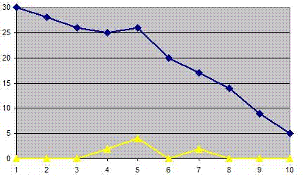

| Concept: Burndown Chart |
 |
|
| Related Elements |
|---|
A burndown chart is a simple tool for tracking the progress of an agile project. In all cases, a burndown chart has a Y axis that shows something measurable that is planned to eventually get to zero, and an X axis that shows the total remaining time to do so. Typical items tracked for the Y axis of a burndown chart include effort hours, functionality, budget, work items, and defects. The X axis typically tracks days, iterations or sprints, or releases. In all cases, some total amount is plotted which might change over time (going up or down), but that ultimately should reach zero by the end of the planned time on the rightmost side of the graph. Following are some examples of specific types of burndown charts:
The burndown chart that follows is an example of tracking the iteration burndown rate. At the beginning of the iteration, there are 30 work items assigned to this iteration. The blue line illustrates the number of work items to be completed. The yellow line shows the number of work items that were added to the current iteration. Adding work items in the middle of the iteration can happen when new defects are discovered or additional tasks are necessary to complete the original tasks.  Figure: Iteration Burndown (Upper line = Total Number of Work Items by Day, Lower line = Aded Work Items by Day) |
Licensed Materials - Property of IBM |